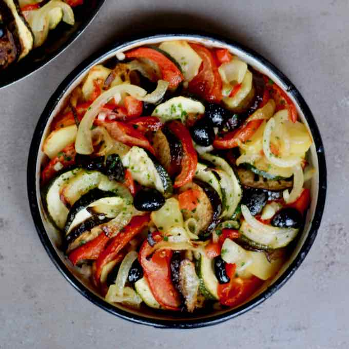

Briam
A traditional Greek roasted vegetable dish with potatoes, zucchini, tomatoes, and red onions with lots and lots of olive oil. Utterly delicious dish with little effort!

Ingredients (for 4 servings)
- 2 pounds potatoes, peeled and thinly sliced
- 4 large zucchini, thinly sliced
- 4 small red onions, thinly sliced
- 6 ripe tomatoes, pureed
- ½ cup olive oil
- 2 tablespoons chopped fresh parsley (Optional)
- sea salt and freshly ground black pepper to taste
Steps
- Preheat oven to 400 degrees F (200 degrees C).
- Spread potatoes, zucchini, and red onions in a 9x13-inch baking dish, or preferably a larger one. Use 2 baking dishes if necessary. Cover with pureed tomatoes, olive oil, parsley. Season with salt and freshly ground pepper. Toss all ingredients together so that the vegetables are evenly coated.
- Bake in the preheated oven, stirring after 1 hour, until vegetables are tender and moisture has evaporated, about 90 minutes. Cool slightly before serving, or serve at room temperature.
Go back to the previous page